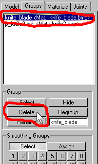

|
|
Before moving on, we will be regrouping this model so that it will be easier to work with and not get confused as to what we need to select later. Switch to the "Groups" rollout and click on the "Regroup" button in the "Group" options as shown in Figure 1.8. It doesn't mater what is highlighted in the list as you have isolated all the faces you wish to regroup.

Figure 1.8 Regrouping all the faces in the p_knife model
Rename this group to "p_knife2.mdl" by double clicking in the text box to the left of the "Rename" button, and typing in the new name. Click the "Rename" button. As you can see you can now quickly reselect the entire knife for manipulation.
It now is up to you to position your knife by moving and rotating it to match the position of the op4 knife.
After you have it in place as Figure 1.9 shows, you will be deleting all the groups of the op4 knife and the materials that were used for it. Click in a blank area of a 2d viewport window to deselect your "p_knife2.mdl" group. Click on a group that is part of the op4 groups in the list area and click the "Delete" button. Repeat these steps until all the groups except the "p_knife2.mdl" group remains. (See Figure 1.9).

Figure 1.9 Deleting the unnecessary Groups
|
|